[3-1] GPIO输出 — 学习笔记
- 课程：江协科技《STM32入门教程-2023版 细致讲解 中文字幕》
- 视频：BV1th411z7sn?p=5，34:29
- 素材：259 帧关键帧（每 8 秒，宽 1280px）+ PP-OCRv4 画面硬字幕 OCR（400 段）；关键截图 14 张随笔记收录（源图在
vidsum_out/stm32_p5/frames/，站内图片在assets/images/stm32-05/） - 字幕情况：该集 B 站没有 CC/AI 字幕，文本由画面烧录的中文字幕 OCR 得到（source=subtitle-ocr），偶有错字已按画面校正。
一句话结论
这一集是 GPIO 的理论课：先演示 LED 闪烁 / 流水灯 / 蜂鸣器三个现象，再拆开 GPIO 的基本结构（APB2 总线 → 寄存器 + 驱动器）和位结构（输入：保护二极管、上下拉、施密特触发器、IDR；输出：ODR/BSRR/BRR、P-MOS/N-MOS），给出 8 种工作模式表，最后讲 LED / 蜂鸣器驱动电路和面包板用法——写代码在下一集 [3-2]。
0. 本集的内容与程序现象
- 本集属于“第一部分 GPIO 输出”（整个 GPIO 模块共 4 小节：[3-1] GPIO输出（输出理论）、[3-2] LED闪烁/流水灯/蜂鸣器（输出程序）、[3-3] GPIO输入（输入理论）、[3-4] 按键控制LED/光敏控制蜂鸣器（输入程序））；第二部分还会补充结构体、指针、枚举等 C 语言知识。
- 视频开头用资料里现成的 3 个程序演示现象（代码下一集讲）：
- LED 闪烁：1 个 LED 不断闪烁；
- LED 流水灯：8 个 LED 循环流水点亮；
- 蜂鸣器：有源蜂鸣器滴滴鸣响。
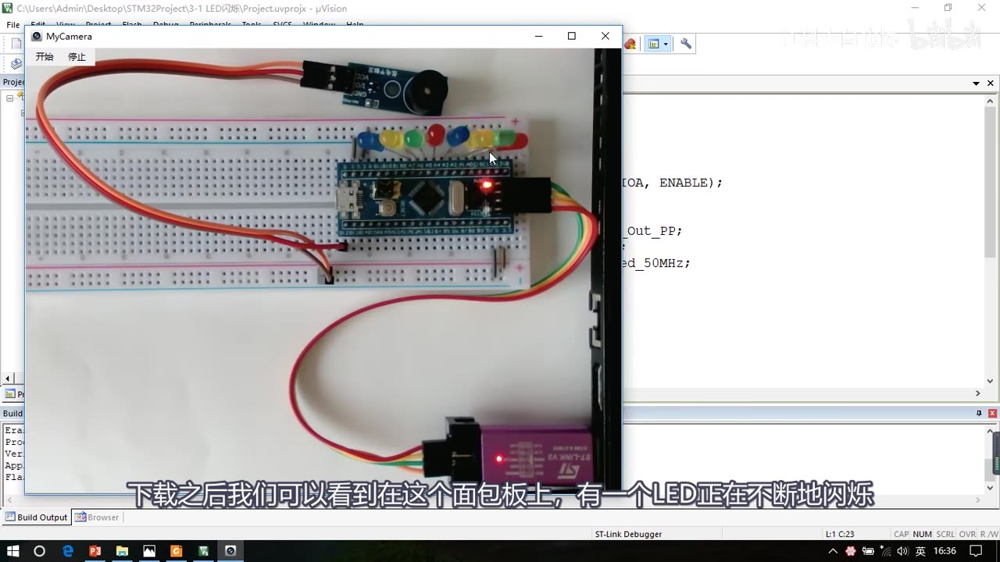
图 1：在面包板上演示 LED 闪烁现象（左：面包板上的 LED；右：对应的 LED闪烁 工程代码）
1. GPIO 是什么
- GPIO = General Purpose Input Output，通用输入输出口，也就是平时说的“IO 口”。
- 可根据使用场景配置为 8 种输入输出模式（下一节细说）。
- 引脚电平为 0V～3.3V：数据 0 = 低电平 0V，数据 1 = 高电平 3.3V；部分引脚可容忍 5V 输入（输入 5V 也认作高电平），但输出最大只有 3.3V（因为供电只有 3.3V）。带 FT（Five Tolerate） 标记的引脚才能容忍 5V，可查 [1-2] 的引脚定义。
- 输出模式：控制端口输出高低电平，用来驱动 LED、控制蜂鸣器、模拟通信协议输出时序等；要驱动功率较大的设备，加驱动电路即可。
- 输入模式：读取端口的高低电平或电压，用于按键输入、外接模块电平信号输入、ADC 电压采集、模拟通信协议接收数据等。
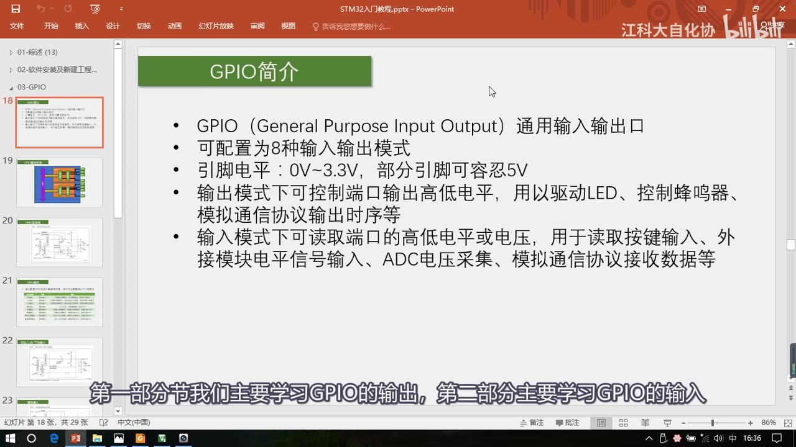
图 2：GPIO 简介——定义、8 种模式、电平范围与输入/输出用途
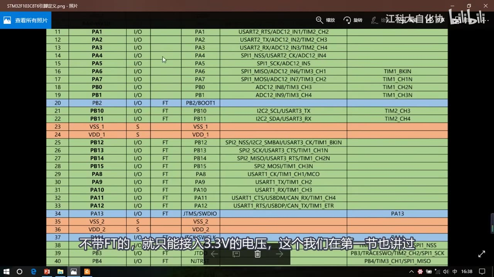
图 3：STM32F103C8T6 引脚定义表（FT 列 = 可容忍 5V 输入的引脚）
2. GPIO 基本结构
- 所有 GPIO 都挂在 APB2 外设总线上（对应系统结构图里 APB2 的位置）。
- GPIO 外设按 GPIOA、GPIOB、GPIOC…… 命名，每个 GPIO 端口有 16 个引脚（编号 0～15）：GPIOA 的第 0 号叫 PA0，依次到 PA15；GPIOB 就是 PB0～PB15。
- 每个 GPIO 模块内部主要包含 寄存器 + 驱动器：
- 寄存器：一段特殊的存储器，内核可通过 APB2 总线读写；寄存器的每一位对应一个引脚——输出寄存器写 1 对应引脚输出高电平、写 0 输出低电平；输入寄存器读 1 表示对应端口现在是高电平、读 0 是低电平。STM32 是 32 位单片机，寄存器是 32 位，但端口只有 16 位，所以只用低 16 位，高 16 位没用。
- 驱动器：用来增加信号的驱动能力；寄存器只负责存数据，真正点灯要靠驱动器提供电流。
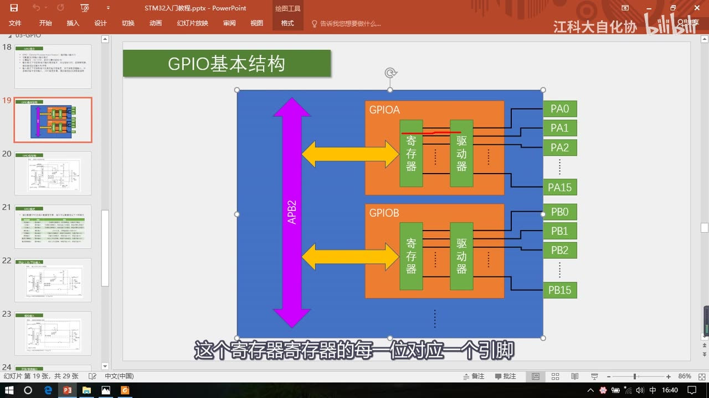
图 4：GPIO 基本结构——APB2 总线连接 GPIOA/GPIOB 的寄存器和驱动器，每端口 16 个引脚
3. GPIO 位结构（本集重点）
参考手册里的**「I/O 端口位的基本结构」图（手册图 13）：左边三个是寄存器，中间是驱动器，右边是某一个 IO 口的引脚；整个结构分成输入部分**（上）和输出部分（下）。
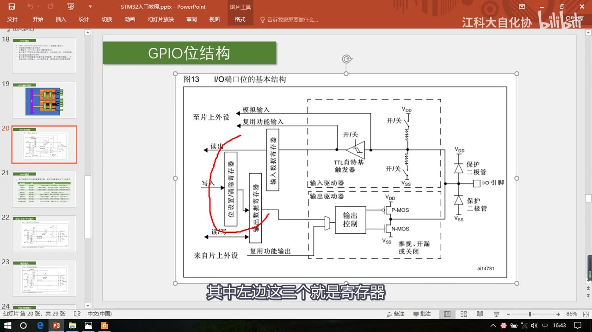
图 5：GPIO 位结构总图（左：寄存器；中：输入/输出驱动器；右：IO 引脚与保护二极管）
3.1 输入部分
- 保护二极管：对输入电压限幅。输入电压高于 3.3V 时上方二极管导通，电流直接流入 VDD，不进入内部电路；输入电压低于 0V 时下方二极管导通，电流从 VSS 流出去；输入在 0～3.3V 之间时两个二极管都不导通，对电路没有影响——从而保护内部电路不被过高/过低电压损坏。
- FT 引脚的额外保护：容忍 5V 的引脚，其上方保护二极管的电源标为 VDD_FT（与普通 VDD 不同），需要做特殊处理；否则直接接 VDD 3.3V、外部再接 5V 时，上方二极管会开启并产生比较大的电流。
- 上拉电阻 / 下拉电阻：上拉接 VDD、下拉接 VSS，两个开关都可以通过程序配置：
- 上拉导通、下拉断开 → 上拉输入（悬空时默认高电平）；
- 上拉断开、下拉导通 → 下拉输入（悬空时默认低电平）；
- 两个都断开 → 浮空输入（悬空时电平不确定）。
- 上拉/下拉阻值都比较大（弱上拉/弱下拉），目的是给悬空引脚一个默认电平，又尽量不影响正常输入。浮空输入使用时端口一定要接连续驱动源，不能悬空。
- 施密特触发器：对输入电压整形。输入高于上限阈值 → 输出瞬间变高；输入低于下限阈值 → 输出瞬间变低；处在上下限之间时保持原输出不变（滞回），从而避免信号波动造成误判。注意：中文手册里译作“肖特基触发器”是翻译错误，英文原文是施密特触发器。
- 输入数据寄存器（IDR）：用程序读某一位，就知道对应端口的输入电平。
- 此外还有两路“旁路”：模拟输入接到 ADC（在施密特触发器之前，因为 ADC 要采模拟量）；复用功能输入接到其他需要读端口的外设（在触发器之后，如串口输入引脚）。
3.2 输出部分
- 数字部分可以由输出数据寄存器（ODR）或片上外设控制，两者通过数据选择器接到输出控制：
- 选 ODR 控制 = 普通 IO 口输出，写 ODR 的某一位就操作对应端口；
- 选片上外设 = 复用功能输出。
- ODR 同时控制 16 个端口且只能整体读写，要单独改某一位而不影响其他位有三种办法：
- 先读 ODR，再用按位与/按位或改某一位，再写回；
- 用位设置/清除寄存器 BSRR：低 16 位写 1 置位（输出高电平），高 16 位写 1 清除（输出低电平），其余位写 0 不产生影响，一步到位；清位也可以用 BRR（低 16 位写 1 清除）；
- 读写 STM32 的位带（bit-band）区域，作用类似 51 单片机的位寻址（本课程主要用库函数，库函数用的是 BSRR/BRR 方式）。
- 输出控制后面接 P-MOS + N-MOS 两个 MOS 管，分为三种输出方式：
- 推挽输出：P-MOS 和 N-MOS 均有效。ODR=1 时上管导通、输出接 VDD = 高电平；ODR=0 时下管导通、输出接 VSS = 低电平；高低电平均有驱动能力。
- 开漏输出：P-MOS 无效。ODR=1 时输出相当于断开（高阻态，没有驱动能力）；ODR=0 时 N-MOS 导通、输出接 VSS = 低电平。只有低电平有驱动能力；可以作为通信协议（如 I2C）的驱动方式，也可以外接上拉电阻到 5V 来输出 5V 电平信号；在多机通信的情况下还可以避免各个设备相互干扰。
- 关闭：引脚配置为输入模式时两个 MOS 管都无效，端口电平由外部信号控制。
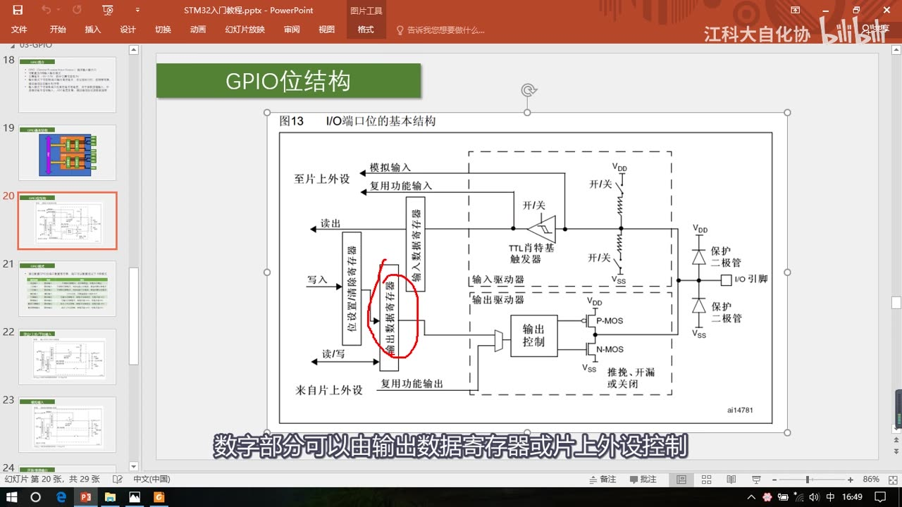
图 6：输出部分——ODR、位设置/清除寄存器、输出控制与 P-MOS/N-MOS（推挽/开漏）
4. 八种工作模式
通过配置 GPIO 的端口配置寄存器，上面的位结构电路可以变成以下 8 种模式：
| 模式名称 | 性质 | 特征 |
|---|---|---|
| 浮空输入 | 数字输入 | 可读取引脚电平，若引脚悬空，则电平不确定 |
| 上拉输入 | 数字输入 | 可读取引脚电平，内部连接上拉电阻，悬空时默认高电平 |
| 下拉输入 | 数字输入 | 可读取引脚电平，内部连接下拉电阻，悬空时默认低电平 |
| 模拟输入 | 模拟输入 | GPIO 无效，引脚直接接入内部 ADC |
| 开漏输出 | 数字输出 | 可输出引脚电平，高电平为高阻态，低电平接 VSS |
| 推挽输出 | 数字输出 | 可输出引脚电平，高电平接 VDD，低电平接 VSS |
| 复用开漏输出 | 数字输出 | 由片上外设控制，高电平为高阻态，低电平接 VSS |
| 复用推挽输出 | 数字输出 | 由片上外设控制，高电平接 VDD，低电平接 VSS |
- 前三种输入模式电路结构基本一样，区别只是上拉/下拉电阻的连接；都属于数字输入，能读取端口高低电平。
- 模拟输入是 ADC 的专属配置：输出断开、施密特触发器关闭，引脚直接接 ADC，其他时候一般用不到。
- 开漏/推挽输出都是数字输出，区别是高阻态 vs 有驱动能力；复用开漏/复用推挽的引脚电平由片上外设控制，通用输出部分不连接。
- 重要结论：输出模式下输入部分仍然有效（一个端口只能有一个输出，但可以有多个输入）；除模拟输入会关闭数字输入外，其余 7 种模式的数字输入都有效。
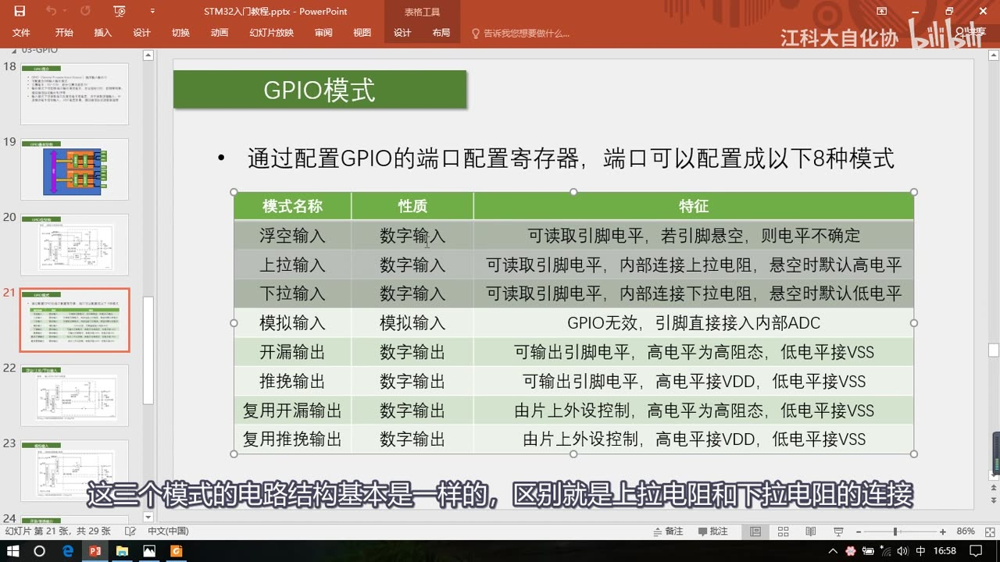
图 7：八种工作模式表（浮空/上拉/下拉输入、模拟输入、开漏/推挽输出、复用开漏/复用推挽输出）
5. GPIO 寄存器（参考手册）
本集只讲 GPIO，AFIO 以后再讲。参考手册 GPIO 章节先给出 8 种模式说明，还有一张外设 GPIO 配置表（使用片上外设引脚时按表里推荐配置）。
| 寄存器 | 偏移 | 作用 |
|---|---|---|
GPIOx_CRL |
0x00 | 端口配置低寄存器：管理 0～7 号引脚，每个引脚 4 位（MODE[1:0] + CNF[1:0]） |
GPIOx_CRH |
0x04 | 端口配置高寄存器：管理 8～15 号引脚 |
GPIOx_IDR |
0x08 | 端口输入数据寄存器：低 16 位对应 16 个引脚 |
GPIOx_ODR |
0x0C | 端口输出数据寄存器：低 16 位对应 16 个引脚 |
GPIOx_BSRR |
0x10 | 位设置/清除寄存器：低 16 位 BS 置位、高 16 位 BR 清除 |
GPIOx_BRR |
0x14 | 位清除寄存器：低 16 位写 1 清除对应位 |
GPIOx_LCKR |
0x18 | 配置锁定寄存器：锁定端口配置，防止意外更改 |
- 每个引脚的模式由 4 位配置，16 个引脚共 64 位，所以要 CRL / CRH 两个 32 位寄存器。
- 配置寄存器里还多了输出速度（MODE）这一项：可限制输出引脚的最大翻转速度（2/10/50MHz），设计目的是低功耗和稳定性；要求不高时一般配置成 50MHz 即可。
- BSRR 高 16 位和 BRR 低 16 位功能相同；单独位设置用 BSRR、单独位清除用 BRR 更方便（都在低 16 位写数据）；如果要对多个端口同时进行位设置和位清除，用 BSRR 一个寄存器可以保证同步性。
- LCKR 用于锁定配置，防止意外更改，用得不多。
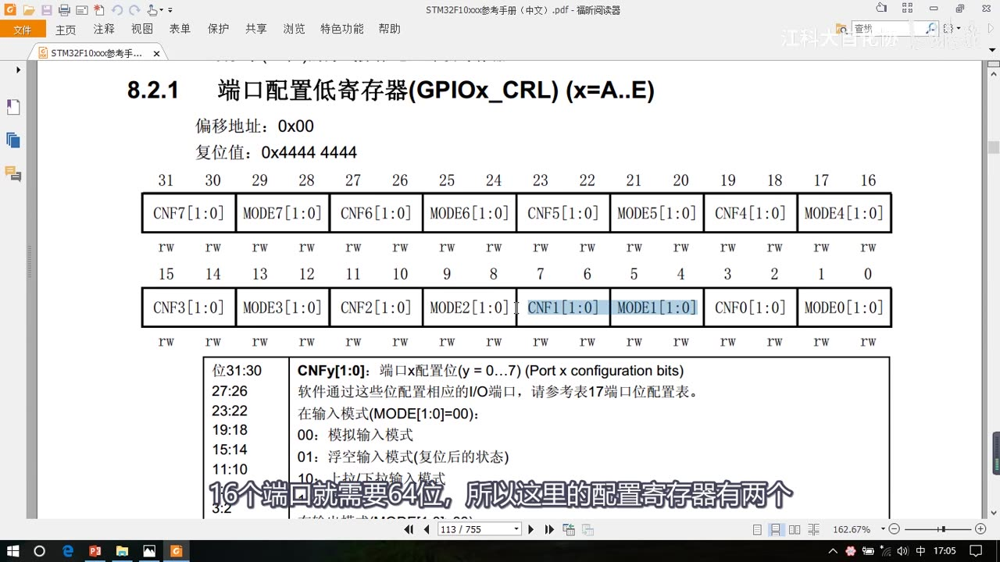
图 8：GPIOx_CRL 端口配置低寄存器（每引脚 4 位：CNF + MODE）
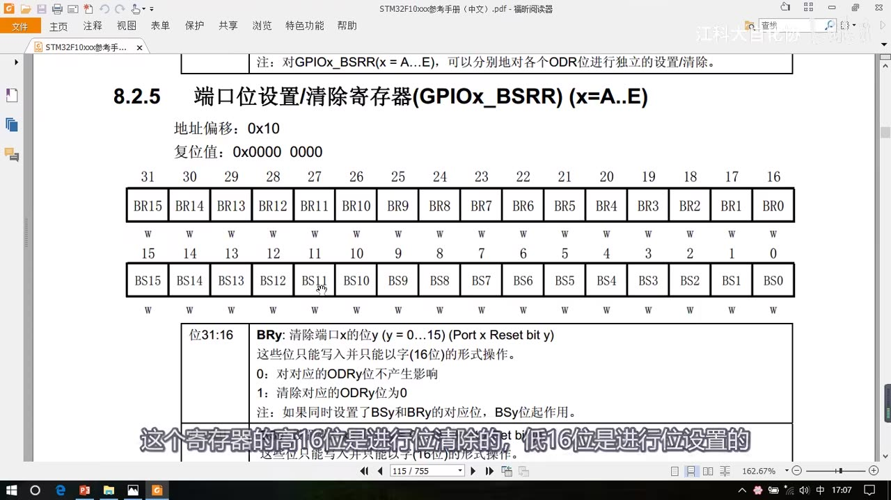
图 9：GPIOx_BSRR 位设置/清除寄存器（低 16 位 BS 置位，高 16 位 BR 清除）
6. LED 与蜂鸣器
- LED：发光二极管，正向通电点亮、反向通电不亮。电路符号左边是正极、右边负极；实物图里未剪脚的 LED 长脚是正极、短脚是负极；从内部看，较小的一半是正极、较大的一半是负极。
- 蜂鸣器分为两类：
- 有源蜂鸣器：内部自带振荡源，正负极接上直流电压即可持续发声，频率固定；本课程使用的就是有源蜂鸣器（模块内部用三极管驱动，信号脚低电平触发：接低电平响，接高电平关闭）。
- 无源蜂鸣器：内部不带振荡源，需要控制器提供振荡脉冲才发声，调整脉冲频率可发出不同频率的声音（51 教程用过，本集不涉及）。
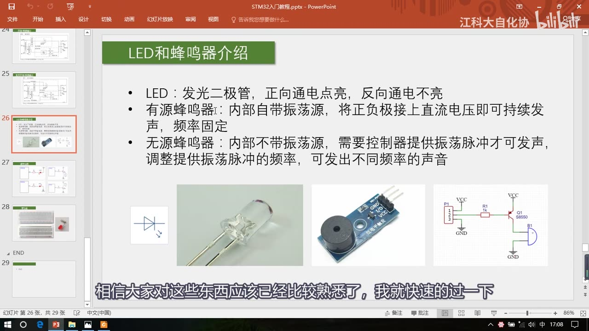
图 10：LED 与蜂鸣器介绍（LED 符号/实物、有源蜂鸣器模块与内部三极管电路）
7. LED / 蜂鸣器驱动电路
LED 的两种接法：
- 低电平驱动：LED 正极接 3.3V，负极通过限流电阻 R1 接到 PA0。PA0 输出低电平时，LED 两端产生电压差、正向导通电流点亮；输出高电平时两端都是 3.3V，没有电流，LED 熄灭。
- 高电平驱动：LED 负极接 GND，正极通过限流电阻接到 PA0；PA0 高电平点亮、低电平熄灭。
- 限流电阻一般都要接：一方面防止 LED 电流过大烧毁，另一方面可以调整亮度（太刺眼就增大阻值）。面包板插接 LED 时课程为简化电路省去了限流电阻，自己设计电路时要加上。
- 两种接法在推挽输出下都可用；但一般倾向低电平驱动，因为很多单片机/芯片是“高电平弱驱动、低电平强驱动”，可以一定程度上避免高低电平打架（如果高电平驱动能力弱，就不能用高电平驱动接法）。
蜂鸣器用三极管开关驱动（功率稍大，直接用 IO 口驱动会让 STM32 负担过重）：
- PNP 三极管（Q1 S8550，接在 VCC 侧）：基极给低电平导通（蜂鸣器响），给高电平截止。
- NPN 三极管（S8050，接在 GND 侧）：基极给高电平导通，低电平断开。
- 原因：三极管的通断需要在发射极和基极之间产生一定的开启电压；PNP 最好接在上边、NPN 最好接在下边，负载位置接错可能导致三极管不能开启。
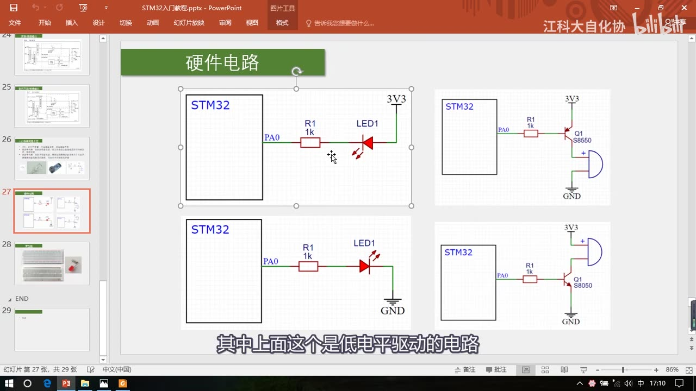
图 11：硬件电路——左侧 LED 低电平/高电平驱动电路，右侧蜂鸣器三极管驱动（PNP 上、NPN 下）
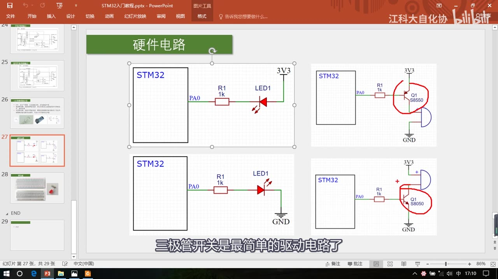
图 12：蜂鸣器三极管驱动——PNP（上，低电平导通）与 NPN（下，高电平导通）
8. 面包板的使用
- 面包板正面是插孔，背面是一条条金属爪；元件引脚插进孔里会被金属爪夹住，从而连通。
- 连接规律：
- 中间竖排 5 个孔内部相连（一列 5 孔为一组），元件插在同一纵列的不同孔位就连接在一起；
- 上下各两排（供电轨）整体相连，通常标有 + / -：第一排正极、第二排负极、第三排正极、第四排负极，需要供电时用跳线从这些孔引出来。
- 有的面包板供电轨中间是断开的，需要自己用跳线把两边连起来（视频里这块恰好是连通的）。
- 示例：用面包板实现“电源直接点亮 LED”——供电轨接电源正负极 → 跳线引正极 → 限流电阻 → LED → 跳线接回负极。
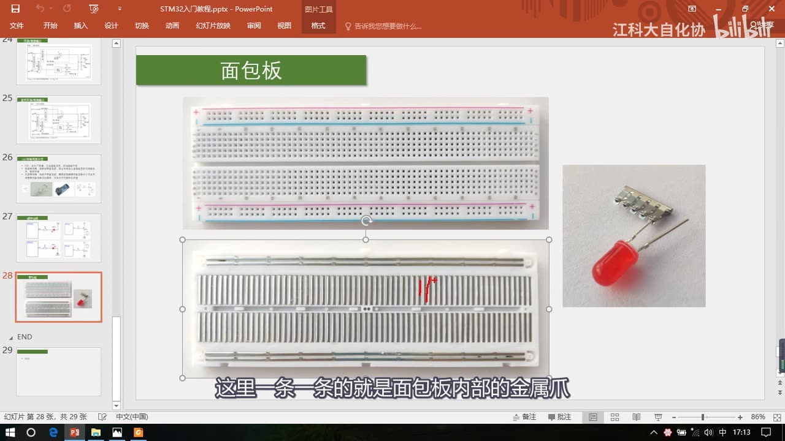
图 13：面包板正面（插孔）与背面金属爪
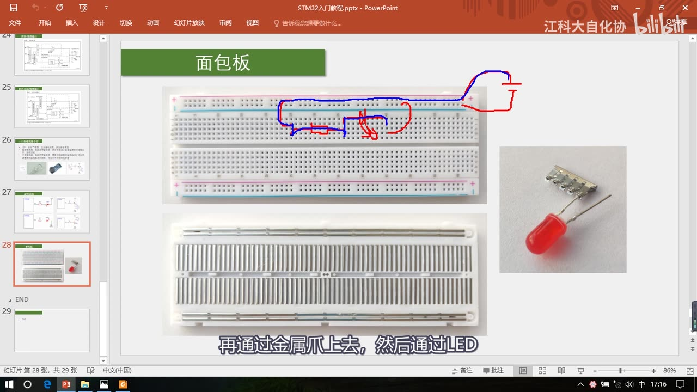
图 14：面包板接线示例——红/蓝线为“电源→限流电阻→LED→负极”的电流路径
9. 坑与易错点
- 5V 不能乱接：只有带 FT 标记的引脚能容忍 5V 输入；输出最高 3.3V。
- 浮空输入不能悬空：必须接连续驱动源，否则电平不确定；不确定时优先用上拉/下拉输入。
- ODR 只能整体读写：单独改一个引脚可以用读-改-写，但必须用
&=/|=只改目标位；更推荐 BSRR 置位 / BRR 清位（一步到位，库函数也是这么做的）。 - 输出模式下输入也有效：除模拟输入外，其他 7 种模式数字输入都可用（“一个输出、多个输入”）。
- 开漏输出高电平是高阻态：没有驱动能力；要输出 5V 需外接上拉电阻到 5V，I2C 等通信正是利用开漏。
- 限流电阻不能省：面包板演示省了，实际电路一定要加，否则 LED 可能烧毁。
- 三极管方向：PNP 接上边（基极低电平导通），NPN 接下边（基极高电平导通）；负载位置不对可能无法开启。
- 面包板供电轨不一定整排连通：用前先确认，必要时中间加跳线。
- 中文手册“肖特基触发器”是翻译错误，实际是施密特触发器。
- 用片上外设引脚先查配置表：外设 GPIO 配置表里写了推荐模式，别配错。
时间轴
| 时间 | 内容 |
|---|---|
| 0:00 | 开场：GPIO 模块共两个部分、四个小节；本集讲 GPIO 输出理论 |
| 0:54 | 程序现象演示：LED 闪烁、LED 流水灯、蜂鸣器 |
| 2:02 | GPIO 简介：定义、8 种模式、0～3.3V/部分容忍 5V、输出与输入用途 |
| 4:58 | GPIO 基本结构：APB2 总线、GPIOA/B/C、16 引脚、寄存器与驱动器 |
| 7:08 | GPIO 位结构：输入部分（保护二极管、上下拉电阻、施密特触发器、IDR） |
| 13:25 | 位结构输出部分：ODR/BSRR/BRR、推挽/开漏/关闭、P-MOS/N-MOS |
| 18:31 | 八种工作模式逐一讲解（输入 3 种、模拟输入、输出 4 种） |
| 23:20 | 参考手册：GPIO 章节、外设 GPIO 配置表 |
| 24:04 | 配置寄存器 CRL/CRH 与输出速度 |
| 24:48 | 输入/输出数据寄存器 IDR、ODR |
| 25:09 | 位设置/清除寄存器 BSRR、位清除寄存器 BRR |
| 26:15 | 配置锁定寄存器 LCKR |
| 26:37 | LED 与蜂鸣器介绍（有源/无源、低电平触发） |
| 28:09 | 硬件电路：LED 低电平/高电平驱动、限流电阻的选择 |
| 30:05 | 蜂鸣器三极管驱动电路（PNP/NPN） |
| 31:28 | 面包板结构、内部金属爪与供电轨 |
| 33:10 | 面包板接线示例：电源直接点亮 LED |
| 34:19 | 总结：下一小节用面包板接电路、写程序 |
存疑
- 文本来自画面硬字幕的 OCR（PP-OCRv4，source=subtitle-ocr），不是 ASR；典型 OCR 错字（本集真实例子）：GPIO→“GPlo”、“IO口”→“O回/1O口”、“第一节”→“第节”，以及“厂”“」”“■”等杂散字符，已按画面和上下文校正，具体以视频画面为准。
- 画面里的字幕本身是清晰的（如“GPIO”“IO口”），上面这些是 OCR 误识而不是字幕笔误；个别字幕本身有语病的地方，笔记按语义整理。
- 寄存器偏移地址（CRL 0x00、CRH 0x04、IDR 0x08、ODR 0x0C、BSRR 0x10、BRR 0x14、LCKR 0x18）来自视频画面，实际以 STM32F10xxx 参考手册为准。
- 本集只演示现象、不写代码；LED 闪烁/流水灯/蜂鸣器的程序实现见下一集 [3-2]。
- 位带（bit-band）区域本集只提了一句，具体用法可查阅参考手册；本课程实际操作以库函数为主。